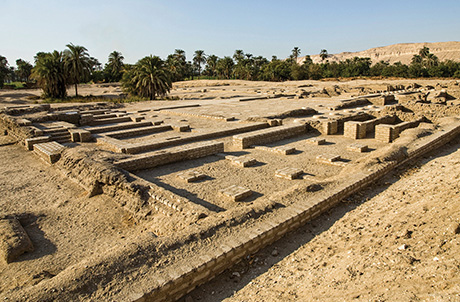

Tell el-Amarna

Tell el-Amarna is the modern name for the ruins of Akhetaten, the short-lived, revolutionary capital city built by the "heretic" Pharaoh Akhenaten and his queen, Nefertiti, during the 18th Dynasty. Abandoning the traditional pantheon of gods and the powerful priesthood in Thebes, Akhenaten relocated his entire royal court to this virgin desert site to exclusively worship the Aten, or the sun disk. The city was hastily constructed using standardized, smaller mudbrick blocks to speed up building time.The site is foundational to the "Amarna Period," an era characterized by a radical, highly stylized departure in Egyptian art that featured exaggerated human forms and intimate depictions of the royal family. Though the city was abandoned and intentionally destroyed by subsequent pharaohs shortly after Akhenaten's death, archaeologists have uncovered the layout of the Great Palace, royal tombs, boundary stelae, and the famous sculptor Thutmose's workshop—where the iconic bust of Nefertiti was discovered.
| Location | Ticket Price (Foreign Tourist) | Visiting Hours |
|---|---|---|
| Minya (East Bank) | Free (open area) | 8:00 AM – 5:00 PM |